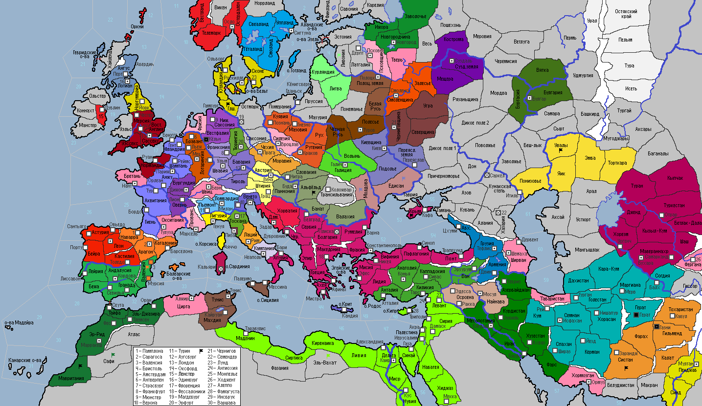

<== | 1 | | 2 | | 3 | | 4 | | 5 | | 6 | | 7 | | 8 | | 9 | | 10 | | 11 | | 12 | ==>
Разрушение Храма Гроба Господня в Иерусалиме
Под давлением религиозных фанатиков правитель Фатимидского государства Альбассин I в 1010 году приказал разрушить Храм Гроба Господня в Иерусалиме и запретить доступ в город христианских паломников [снос Храма ГГ в Иерусалиме, -50% к размеру дохода от паломников в этом Святом месте]
· Дружина Смоленского княжества предпринимает неудачный поход против язычников провинции Весь. · Рабы в Мавритании поднимают мятеж! · Имперская армия под командованием Альбрехта Одонена проигрывает сражение в Саксонии, не сумев разбить славянских захватчиков. · Ильяс I при помощи верных помощников, убивших его старшего брата, захватывает власть в Буидском султанате. Сторонники погибшего Русбахана, провозглашенного шиитским мучеником, поднимают мятеж, пытаясь захватить столицу и свергнуть самозванца. Ожесточенное сражение заканчивается победой сторонников Ильяса, что подается как чудо, явленное Аллахом. · Захваченные половцами рабы поднимают восстание в провинции Увалы. · Воспользовавшись тем, что Киев увел войска на юг в поход на печенегов кочевые варвары совершают набег на Переяславскую землю, но получают отпор от находившихся там союзных сил Чернигова. Меж тем дружина князя Святослава II разбивает наспех собранное ополчение хана Бояна и захватывает Молдову. · Фатимиды разрывают торговый договор с Венецией, подрывая её торговую мощь. Войска Фатимидского султаната разбивают варваров в Мадеине и Эль-Вахате. · Миккель, младший сын покойного датского короля Харальда Синезубого, занимает трон страны. В династическом кризисе, в котором оказалась страна, были обвинены евреи, которых было решено изгнать из страны. Ослабление королевства привлекли внимание воинственных вендов, которые нападают на Гольштейн. Дания заключает оборонительный союз с Шотландией и военный союз с Норвегией. · Разбитые печенеги мигрируют в Валахию. · Фархад I наследует трон Алжира. · Королю Кастилии Рамиро II наследует младший сын Мигель. Кастильская знать возмущается нарушением древних вестготских правил наследования. · Венгрия по итогам войны с печенегами присоединяет к себе провинцию Валахия. Трансильванские варвары вторгаются в Альфёльд. · Император Исаак II Ангел начинает в стране судебную реформу, призванную покончить с позорящей империю коррупцией. · Глеб I Воитель – новый князь Псковского княжества. · Дож Генуи Импрано Дория заболевает чахоткой и скоропостижно умирает в 1010 г. · Эмир Мосула Гасcан III умирает. Ему на смену к власти приходит дочь Ильнара I. · На смену султану Кутулмышу в Румском султанате приходит Саид-Арслан. Оппозиционно настроенные беи поднимают мятеж против малолетнего наследника, но им не удается захватить столицу – г.Конья. Армения была поделена между государствами победителями в недавней войне – провинция Ван отошла Руму, а провинция Армения – Грузии. · Воинственные белуджи вторгаются в провинцию Систан! В г.Газни восстают рабы! · Султан Сельджук I умирает… Трон занимает Тугрул I. В г.Герат поднимается восстание рабов! · Саксонцы проигрывают сражение с варварами. «Чтоб ваши матери рожали только козлобородых выродков!» - в бессилии кричал граф Танкмар I, за что потомками был наречен «Сквернословом». · Караханидский полководец Кутлуг Кара-Мурза ведет войска в Туран и камня на камне не оставляет над вторгшимися туда ранее варварским полчищем. · Основан новый город: Грац (Австрия)